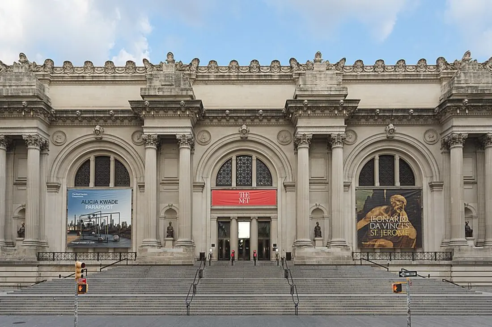
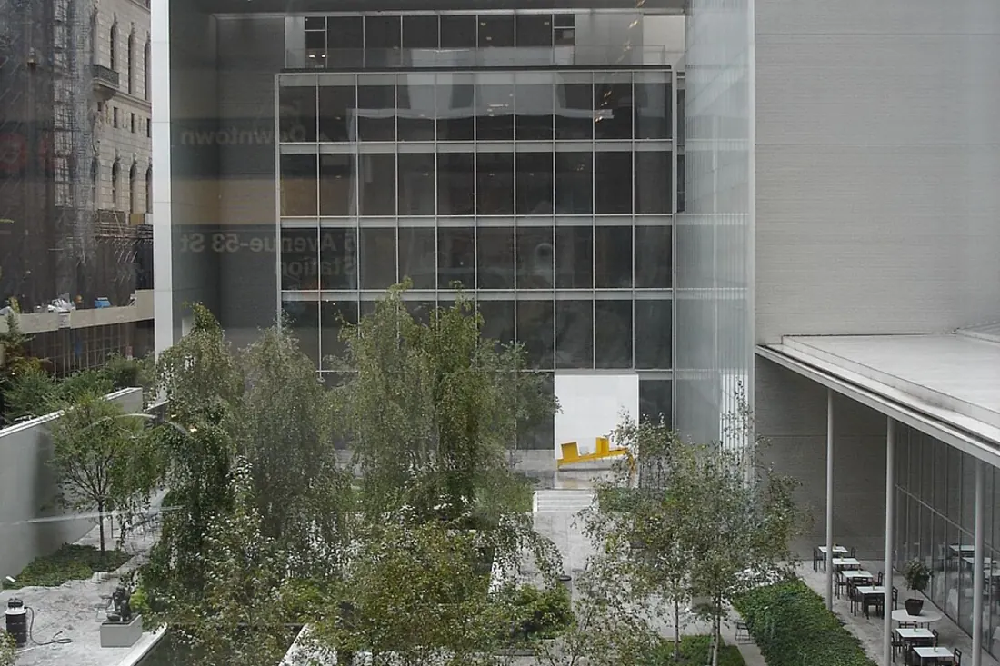
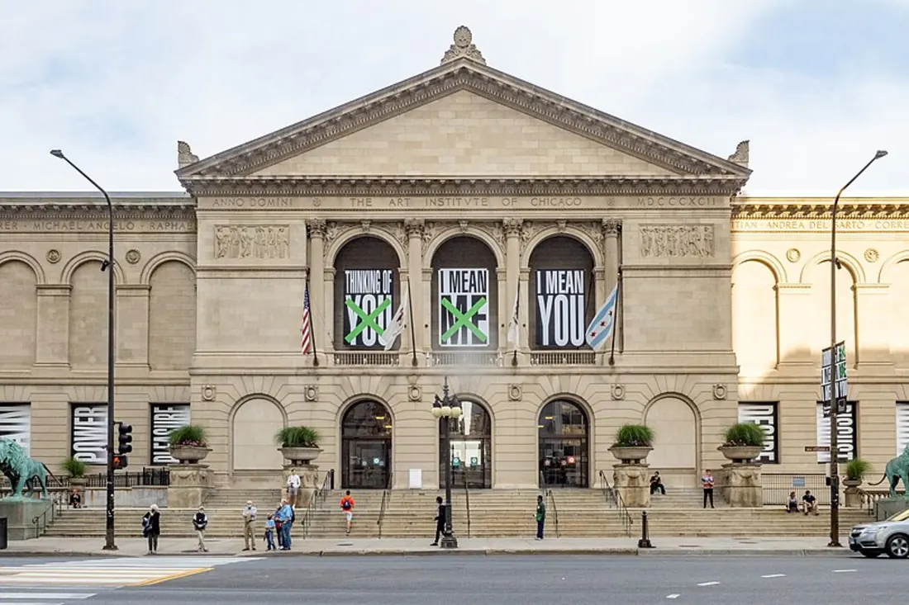
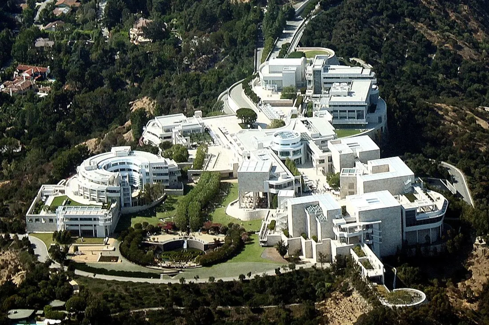
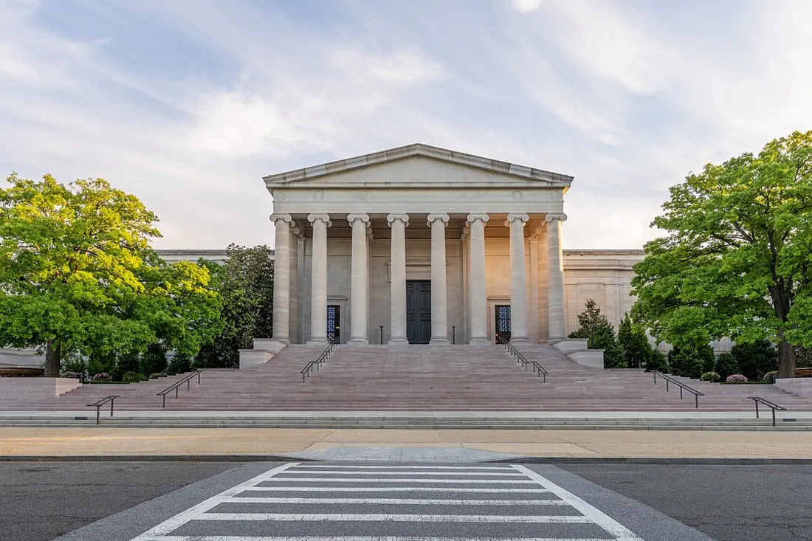
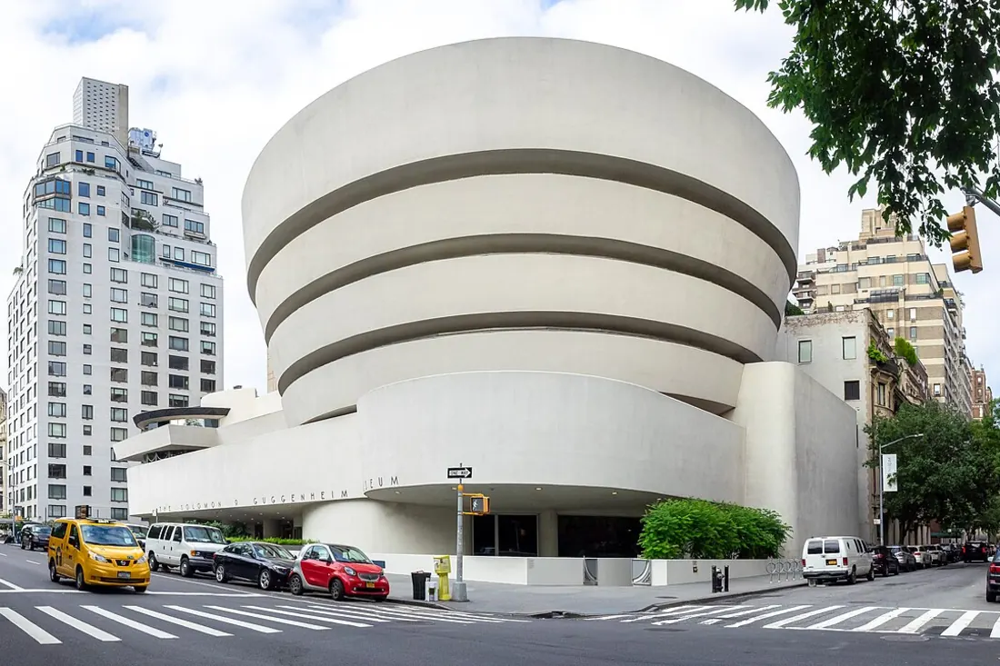
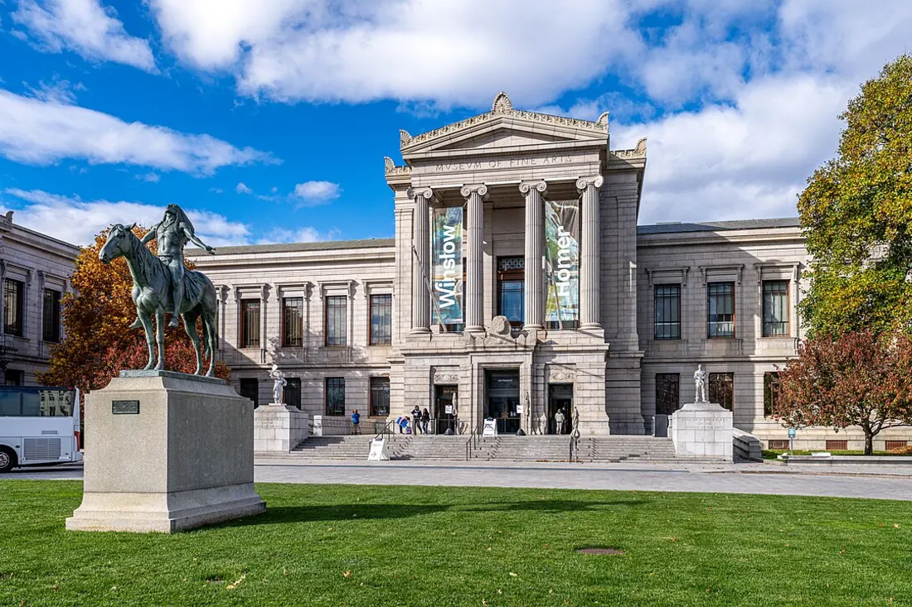
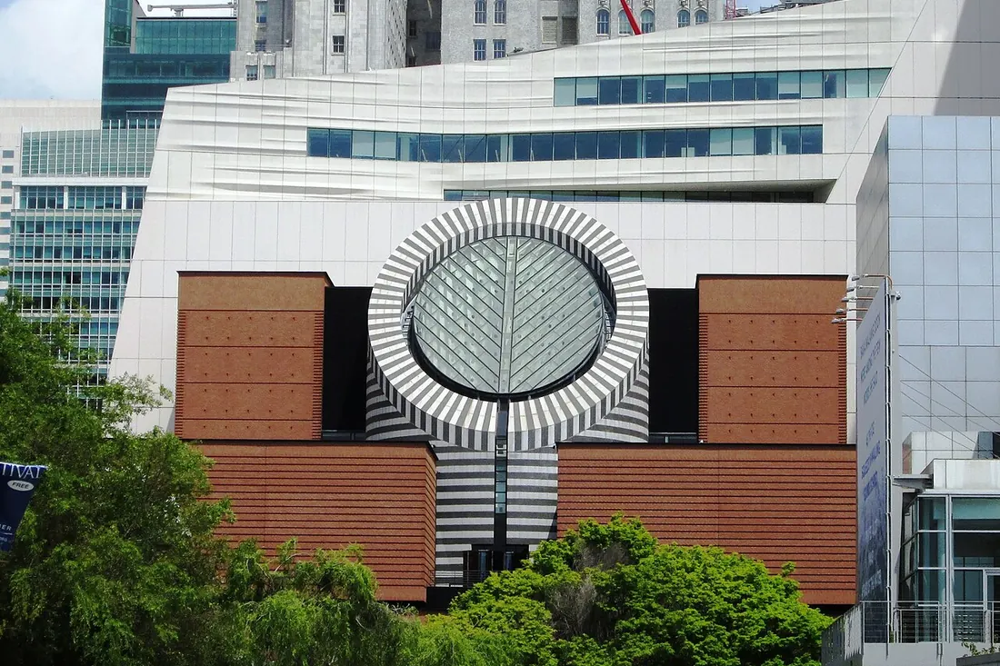

Метрополитен-музей
Нью-Йорк, США
Один из крупнейших музеев мира, основанный в 1870 году. Более 2 миллионов экспонатов — от египетских храмов до работ Караваджо и Вермеера. 200 выставочных залов в здании на Пятой авеню.
Сайт музеяВеличайшие музеи Нового Света — от Метрополитена до Чикаго

Один из крупнейших музеев мира, основанный в 1870 году. Более 2 миллионов экспонатов — от египетских храмов до работ Караваджо и Вермеера. 200 выставочных залов в здании на Пятой авеню.
Сайт музея
MoMA — ведущий музей современного искусства, основанный в 1929 году. Хранит шедевры Ван Гога, Пикассо, Уорхола и многих других. Более 200 000 работ живописи, графики, скульптуры и кино.
Сайт музея
Один из крупнейших и старейших музеев США, основанный в 1879 году. Более 300 000 работ — от картин Эдуарда Мане и Поля Сезанна до витражей Луи Комфорта Тиффани.
Сайт музея
Культурный центр на холмах Лос-Анджелеса. Два кампуса — Гетти-Вилла (античное и старое искусство) и Гетти-Центр (от Средневековья до наших дней). Шедевры Ван Гога, Ренуара и Рембрандта.
Сайт музея
Основана в 1937 году на средства Эндрю Меллона. Шедевры европейских и американских мастеров — от Рафаэля и Вермеера до Ротко. Вход бесплатный для всех посетителей.
Сайт музея
Здание-спираль работы Фрэнка Ллойда Райта — символ современной архитектуры. Коллекция охватывает искусство от импрессионизма до актуальных практик: Кандинский, Шагал, Мирó.
Сайт музея
Один из самых больших музеев Америки, основанный в 1870 году. Почти 500 000 экспонатов: японское искусство, египетские древности и одна из лучших коллекций французских импрессионистов за пределами Франции.
Сайт музея
Первый музей Западного побережья, целиком посвящённый искусству XX века. Семь этажей галерей с работами Джексона Поллока и Энди Уорхола, а также знаменитая панель Диего Риверы «Pan American Unity».
Сайт музеяОдин из крупнейших музеев США в здании-храме греческого стиля, знаменитом «Рокки-лестницей». Собрание включает импрессионистов и крупнейшую в мире коллекцию произведений Марселя Дюшана.
Сайт музея